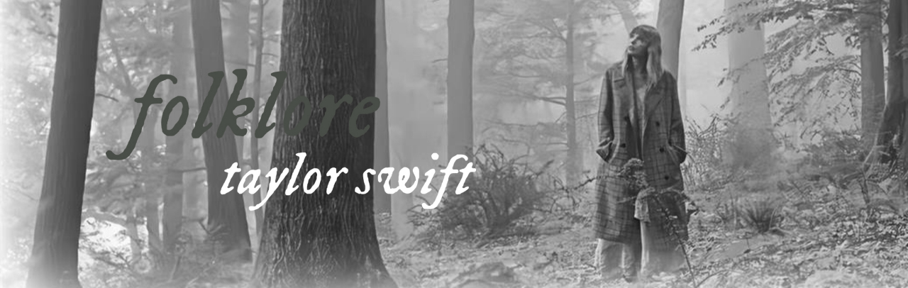
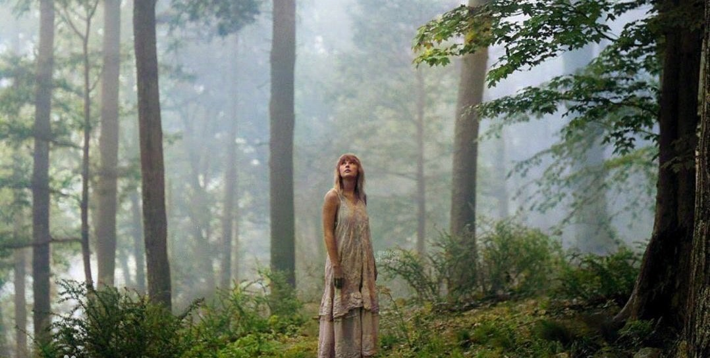

继2019年发行专辑《Lover》后，泰勒·斯威夫特的许多计划因遭受新冠肺炎的冲击而不得不延期或取消。但是泰勒·斯威夫特在居家隔离四个月的时间
内，积极创作并录制完成了该专辑中的收录曲。首发单曲《Cardigan》由泰勒·斯威夫特独立写作和录制，她在该歌曲中注入了自己的许多创意、梦想、恐惧
和沉思，后来又与不同的音乐人合制完成。
《Folklore》邀请到The National乐团的亚伦·德斯纳、美好冬季乐团、威廉·鲍瑞和杰克·安托诺夫合作，泰勒·斯威夫特采取远距互动方式，与
亚伦·德斯纳共同创制了16首歌中的11首，美好冬季乐团除了共同创作，主唱也有参与演唱，威廉·鲍瑞则参与创作两首歌。
1.The 1
2.Cardigan
3.The Last Great American Dynasty
4.Exile (featuring Bon Iver)
5.My Tears Ricochet
6.Mirrorball
7.Seven
8.August
9.This Is Me Trying
10.Illicit Affairs
11.Invisible String
12.Mad Woman
13.Epiphany
14.Betty
15.Peace
16.Hoax

区别与上一张专辑《Lover》的色彩斑斓，泰勒·斯威夫特在该专辑中的照片用了黑白色调、静谧的氛围。
在《Folklore》复古黑白色调封面的衬托、摄影师贝丝·加拉布兰特的诠释下，泰勒·斯威夫特不再是五光十色、绚丽华美的，而是内心敏感、需要
治愈的。《Folklore》是一张突破泰勒·斯威夫特固有风格的专辑，她的声音变得冷静而节制，不再有之前汹涌的控诉和骄傲的自信，多的是于无声处听
惊雷的力量，她仿佛卸下了束缚和愤怒，转而陷入思索。隔离生活让泰勒·斯威夫特在该专辑中变得比以往更加温柔，甚至有些忧伤，她重拾她拿手的风格
，用简单的音乐形式将一个个故事娓娓道来。
从专辑名字和封面看来，《Folklore》有别于泰勒·斯威夫特的前几张作品。时间虽短，但这不妨碍《Folklore》是一张好专辑。它展露出一种才华
横溢的清高和优美，带着一股子要横扫格莱美奖的劲儿，还带着真诚的温柔和脆弱。
| 获奖记录 | |||||||||||
|---|---|---|---|---|---|---|---|---|---|---|---|
| 时间 | 颁奖机构 | 授予奖项 | 获奖作品 | 结果 | |||||||
| 2020 | 吉尼斯世界纪录大全 | 发行首日在声田拥有最多串流的女歌手专辑 | 《folklore》 | 获奖 | |||||||
| 2021 | 第63届格莱美奖 | 年度专辑 | 《folklore》 | 获奖 | |||||||
| 最佳流行演唱专辑 | 《folklore》 | 提名 | |||||||||